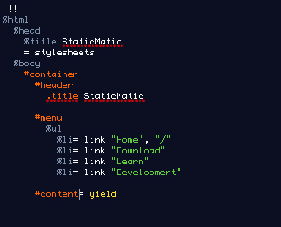
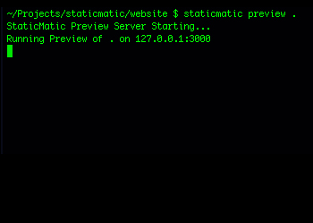
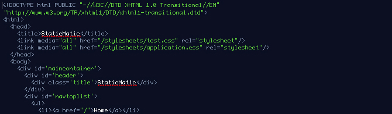

Static websites, the modern way
Web developers are used to using dynamic and frameworks like Ruby on Rails to develop applications. When it comes to working with static, non-dynamic websites it can seem like stepping back in time.
You'd like to
- Replace over-featured, cumbersome Content Management Systems
- Speed up your prototypes
Meet StaticMatic
Concise and terse Haml Templating

Live preview server for development

Output full HTML pages 